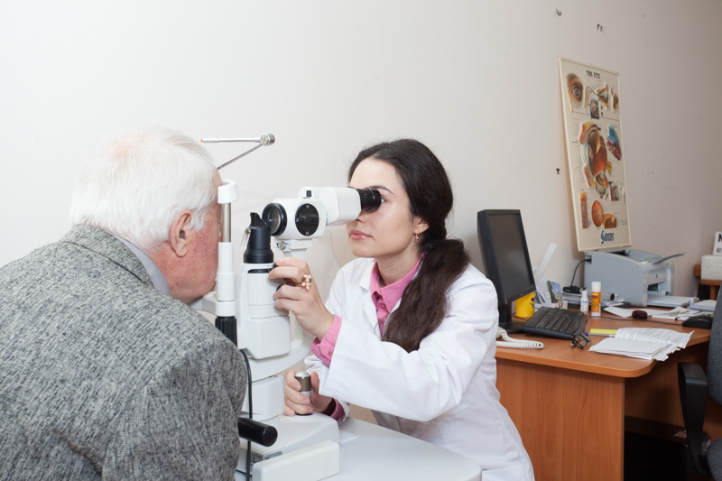

<!DOCTYPE html>
<html lang="ru">

<head>
    <meta charset="UTF-8">
    <meta http-equiv="X-UA-Compatible" content="IE=edge">
    <meta name="viewport" content="width=device-width, initial-scale=1.0">
    <link rel="stylesheet" href="./bootstrap/dist/css/bootstrap.css">
    <link rel="stylesheet" href="./slick-carousel/slick/slick.css">
    <link rel="stylesheet" href="./slick-carousel/slick/slick-theme.css">
    <link rel="stylesheet" href="./css/main.css">
    <title>Детские офтальмологи по всему миру бьют тревогу</title>
</head>

<body>
    <main>
        <section>
            <div class="container">
                <div class="content">
                    <div class="heading">
                        <div class="b-bottom">
                            <h2>Детские офтальмологи по всему миру бьют тревогу</h2>
                        </div>
                        <div class="back-arrow"><a href="#"></a></div>
                    </div>
                    <p class="text-light-grey">5 марта 2021</p>
                    <p>Детские офтальмологи по всему миру бьют тревогу. Количество глазных заболеваний среди детей
                        растет угрожающими темпами.</p>
                    <p> По данным всемирной Ассоциации офтальмологов, уже сегодня каждому 10-му ребёнку до
                        3 лет ставят диагноз «косоглазие», а каждый 3-ий ученик оканчивает школу в очках.</p>
                    <p>Кто виноват в проблемах детской офтальмологии и как не «проглядеть» снижение зрения
                        у собственного ребенка попробуем разобраться в этой статье.</p>
                    <p>Гаджет детям – не игрушка.По мнению врачей, за последнее десятилетие мощнейшим толчком
                        в развитии «эпидемии» глазных заболеваний среди детей стало появление гаджетов.</p>
                    <p>Каждый из нас становился свидетелем ситуации, когда в магазине, поликлинике, транспорте
                        или на прогулке малыш начинает капризничать или плакать, и мама тут же дает ему в руки телефон
                        или планшет с мультиком, чтобы хоть немного посидел спокойно.</p>
                    <p>Опасность кроется в том, что ребенок не может удержать смартфон в фиксированном положении,
                        экран постоянно дергается, а зрительные мышцы малыша неготовые к таким нагрузкам, чрезмерно
                        перенапрягаются, что за пару лет может привести к серьезным нарушениям зрения.</p>
                    <div id="dots-slider" class="carousel">
                        <div class="slider-item">
                            <div class="slide-img">
                                
                            </div>
                        </div>
                        <div class="slider-item">
                            <div class="slide-img">
                                
                            </div>
                        </div>
                        <div class="slider-item">
                            <div class="slide-img">
                                
                            </div>
                        </div>
                        <div class="slider-item">
                            <div class="slide-img">
                                
                            </div>
                        </div>
                    </div>
                    <p>Поэтому специалисты категорически не рекомендуют давать смартфоны детям до 3-х лет. Интернет –
                        не эксперт в области детской офтальмологии.</p>

                    <p>Многие родители, наверное, в силу своей занятости, а некоторые, возможно из соображений экономии,
                        отказываются от похода к врачу в пользу советов в интернет-пространстве. Именно там собираются
                        «лучшие специалисты», которые лечат любые заболевания со 100% гарантией, основываясь
                        на собственном опыте, годами проверенный на всех родственниках, друзьях и знакомых.</p>

                    <p>На всевозможных форумах они рекомендуют травяные отвары по старинным рецептам, компрессы,
                        упражнения, и даже лекарственные препараты!</p>

                    <p>Мамочки, остановитесь! Как можно без осмотра врача и постановки диагноза что-то закапывать,
                        чем-то промывать или намазывать непроверенными средствами глаза своему малышу?!
                        От таких «проверенных препаратов» он может стать инвалидом на всю жизнь или вовсе потерять
                        зрение.</p>
                </div>
            </div>
        </section>
        <section>
            <div class="container">
                <div class="b-bottom">
                    <h2>Еще новости</h2>
                </div>
                <div class="search">
                    <input type="text" class="form-control" placeholder="Поиск по новостям">
                </div>
                <div class="row">
                    <div class="col-lg-4 col-6">
                        <div class="block-item__img">
                            
                        </div>
                        <div class="block-item__body">
                            <p class="text-light-grey">23 Марта 2021</p>
                            <p class="block-item__text">Наши специалисты ездили на конференцию детских
                                офтальмологов</p>
                        </div>
                    </div>
                    <div class="col-lg-4 col-6">
                        <div class="block-item__img">
                            
                        </div>
                        <div class="block-item__body">
                            <p class="text-light-grey">20 Марта 2021</p>
                            <p class="block-item__text">Новые методы и инструменты лечения глаукомы у детей
                            </p>
                        </div>
                    </div>
                    <div class="col-lg-4 col-6">
                        <div class="block-item__img">
                            
                        </div>
                        <div class="block-item__body">
                            <p class="text-light-grey">20 Марта 2021</p>
                            <p class="block-item__text">Новые методы и инструменты лечения глаукомы у детей
                            </p>
                        </div>
                    </div>
                </div>
            </div>
        </section>
    </main>

    <script src="./bootstrap/dist/js/bootstrap.js"></script>
    <script src="./jquery/dist/jquery.min.js"></script>
    <script src="./slick-carousel/slick/slick.min.js"></script>
    <script src="./js/script.js"></script>
</body>

</html>